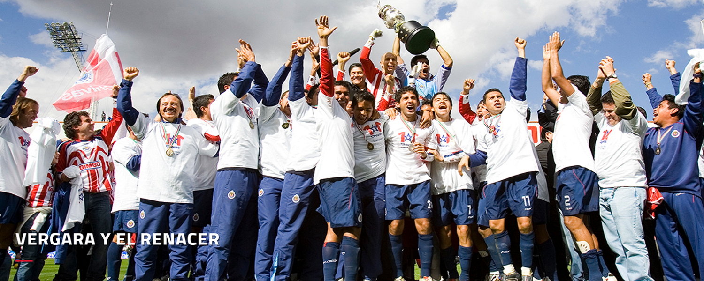
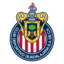

El Club Deportivo Guadalajara S.A. de C.V., mejor conocido como Chivas, es uno de los dos equipos con más campeonatos en la historia del futbol mexicano. Fue fundado el 8 de mayo de 1906 y su propietario desde 2003 es el empresario Jorge Vergara Madrigal, quien también funge como Presidente del Grupo Omnilife-Chivas. Guadalajara juega en el Estadio Akron. Entre las leyendas que han vestido la camiseta rojiblanca se encuentran: Salvador Reyes, José Villegas, Sabas Ponce, Guillermo Sepúlveda, Juan Jasso, Jaime Gómez, Héctor Hernández, Ignacio Calderón, Fernando Quitarte, Benjamín Galindo, Javier Ledesma, Eduardo de la Torre, Ramón Ramírez, Alberto Coyote, Oswaldo Sánchez, Ramón Morales, Adolfo Bautista, Omar Bravo, Carlos Salcido y Javier ‘Chicharito’ Hernández. A lo largo de 112 años, las rayas rojas y blancas han pintado la historia del futbol mexicano con múltiples episodios de alegría y de triunfos, estampas de goles y marcas que han forjado la tradición que hoy define al Rebaño Sagrado.
Todo empezó cuando un grupo de jóvenes, en el albor del siglo XX, decidió seguir la idea del belga Edgar Everaert para fundar el Unión Football Club, primer nombre que tuvieron las Chivas Rayadas del Guadalajara. Fue en el almacen llamado La Ciudad de México donde Everaert y los hermanos Rafael y Gregorio Orozco se animaron y le dieron a La Perla de Occidente uno de sus emblemas más reconocidos. Enfundado en una camiseta blanca, el equipo disputó su primer partido contra el conjunto del Gimnasio Atlético Occidental y el cuadro recién formado tuvo como estratega a Rafael Orozco, quien también fue su primer presidente y bajo su mando llegaron las rayas rojas y blancas a sugerencia de Everaert, quien tomó los colores de la bandera de la ciudad de Brujas, Bélgica (de donde era originario), así como el cambio de nombre a Guadalajara, el cual quedó oficializado el 26 de febrero de 1908. En ese inicio, el Guadalajara contaba en sus filas con jugadores belgas, franceses, españoles y mexicanos, y fue hasta la temporada 1943-44, en su ingreso al profesionalismo, que el club decidió contar en su plantilla sólo con elementos mexicanos.
Una docena de títulos fue la cosecha del Guadalajara en esos primeros años de vida, al mismo tiempo que el futbol en Jalisco se consolidaba gracias a los nombres de figuras rojiblancas que sobresalían por su calidad y pasión. Pablo ‘Pablotas’ González, Fausto y Max Prieto, además de José ‘Pelón’ Gutiérrez, fueron algunos de los elementos que empezaron a grabar en la memoria histórica del club sus nombres como estrellas del que a la postre se transformaría en el cuadro más querido de todo México.
La Primera División profesional inició formalmente en la temporada 1943-44 y con ello el Guadalajara empezó su andar en los campos de futbol del país y en su debut superó al experimentado Atlante en la Ciudad de México por 4-1. El mote de ‘Chivas’ El mote que actualmente el Guadalajara ostenta con orgullo nació en la década de los 40, cuando el periódico El Informador, de la capital de Jalisco, publicó el 30 de septiembre de 1948, después de un encuentro contra el Tampico por la Jornada Dos, el encabezado: JUGARON A LAS CARRERAS Y GANARON LAS ‘CHIVAS’ UNO A CERO; el título fue aprovechado por los seguidores del acérrimo rival, Atlas, para mofarse del conjunto rojiblanco. Lo que inició como una burla se transformó en un sonido que retumba en todo el futbol mexicano hasta la fecha, un fenómeno que trasciende fronteras con los más de 40 millones de seguidores en el país, Estados Unidos y el mundo.
Fue el nombre que se le dio al equipo que representó a Chivas en la etapa comprendida entre 1957 y 1970, pues la hazaña conseguida por este grupo de jugadores es inigualable hasta ahora, ya que se conquistaron:
El resurgimiento se dio en la década de los 80; una nueva generación de jóvenes forjada en las fuerzas básicas del club y con un técnico de casa en el banquillo, Alberto Guerra, le dieron al Guadalajara el protagonismo de antaño. Javier ‘Zully’ Ledesma, Fernando Quirarte, Demetrio Madero y Ricardo ‘Snoopy’ Pérez, además de la contratación de uno de los medios mexicanos más finos de la historia, Benjamín Galindo, fueron nombres que le dieron una nueva mística a Chivas; ésta base se reforzó con herederos de viejas glorias del equipo: Eduardo, José Manuel y Néstor de la Torre, así como Omar Arellano Nuño engrosaron las filas tapatías con el apellido histórico que traían a cuestas, pero con un talento innegable que enorgulleció a sus progenitores.
En el Torneo de Verano 1997, las Chivas hicieron una campaña muy sólida que culminó con una Final de alarido en contra de los excéntricos Toros Neza de Enrique Meza y con Antonio Mohamed como figura. El Rebaño sacó el empate a un gol en el primer partido celebrado en Ciudad Netzahualcóyotl, Estado de México, resultado que hacía difícil de imaginar el desenlace sucedido en el juego de Vuelta. Como siempre que un título estaba de por medio, el Estadio Jalisco lució pletórico en colores rojo y blanco, mientras que en la cancha el equipo no desentonó con esa vistosidad: seis goles en la segunda mitad fueron clavados en la frente de los Toros que sólo marcaron uno
Así, los años pasan y la grandeza de Chivas se sostiene y crece en millones de almas; hacia atrás en el tiempo con leyendas que renacen y hacia el futuro en un constante cantar de goles siempre enfundados en el rojo y el blanco, como pasión pura a ras de pasto contagiada de una esfera de gajos y el unísono de un mismo sentimiento: ¡Chivas!
